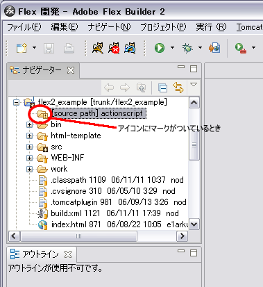
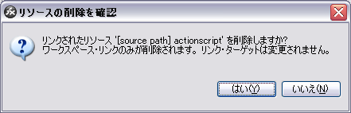
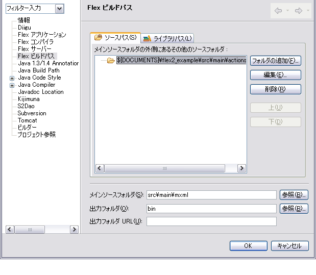
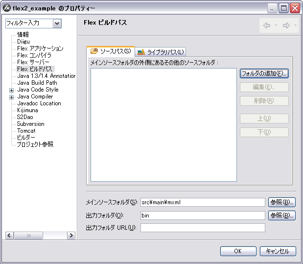
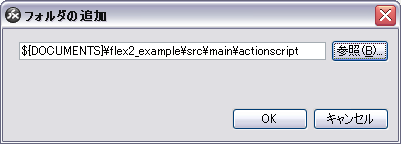
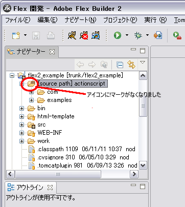

flex2_example(S2Flex2のサンプル)の設定方法
flex2_exampleをdownloadした後の設定方法です。
概要
flex2_exampleは、Tomcatプロジェクトとflexプロジェクトをあわせたプロジェクトになっています。
Flexプロジェクトでは、ソースフォルダとして指定されたメインの場所以外にソースフォルダを指定できるようになっているのですが、このパスの情報が.projectファイルにフルパスで記述されてしまいます。
downloadしたflex2_example-x.x.x.zipを解凍する際に、.projectに記述されたパスと異なる場所に配置するときには以下の方法を用いて、各自の環境にあわせる必要がでてきます。
ここでは、各自の環境に合わせて動作するように設定変更する方法を示します。
方法1 ".project"ファイルを編集する。
一つ目の方法は、直接.projectファイルを編集する方法です。編集後Flex Builder 2でプロジェクトを選択して右クリック->更新を選択することで反映されます。
flex2_example直下にある",project"ファイルを任意のエディタで開きます。以下の記述を探します。
<linkedResources>
<link>
<name>[source path] actionscript</name>
<type>2</type>
<location>E:/profile/s2flex/workspace/flex2_example/src/main/actionscript
</location>
</link>
</linkedResources>
上記のlocationタグの値を各自の環境に合わせて変更します。
方法2. Flex Builder 2(Eclipse)上で再設定する。
２つ目の方法は、 Flex Builder 2上で修正する方法です。方法1と比べて手順は多いですがマウスクリックで設定することができます。
1.既存リンクの削除
Flex Builder 2にimportしたflex2_exampleを開きます。[source path]actionscriptのマークに!マークがついていることを確認したら、[source path] actionscriptを選択して右クリックで削除します。
！マークがついている[source path]actionscriptを選択します。

右クリックで削除を選択すると、削除の確認ダイアログが表示されます。

はいを選択して削除します。
2 Flex ビルドパスの表示
.プロジェクトを選択してプロパティ->Flex ビルドパスを選択してソースパスタブを開きます。
フォルダがひとつだけ設定されていることを確認します。
3.設定の削除
2.で表示したFlexビルドパス画面で、メインソースフォルダの外側にあるその他のソースフォルダにある設定を選択します。

.削除ボタンをクリックしてソースフォルダから一度削除します。
ここで一度OKボタンをクリックして設定画面を閉じます。
4.ソースフォルダの再設定
一度閉じたプロパティ画面を再度表示します。Flexビルドパス画面を選択してフォルダの追加..ボタンをクリックして、flex2_exampleのフォルダ以下にある/src/main/actionscriptを選択します。

通常だと以下のパスになります。
${DOCUMENTS}\flex2_example\src\main\actionscript
※上記はflex2_exampleプロジェクトが、デフォルトの場所に保存されているときの例です。
※デフォルト以外の場所にプロジェクトをおいている場合は、上記と同じにならない可能性があります。
5.設定変更の確認
ソースフォルダを再設定してOKボタンをクリックすると、外部リンクのパスがFlex Builder 2によって設定され以下の様に表示されるようになります。

外部リンクが正しくなると、アイコンが変わります。
フォルダを開くとエイリアス(ショートカット)のようにactionscript以下のファイルが表示されるようになります。